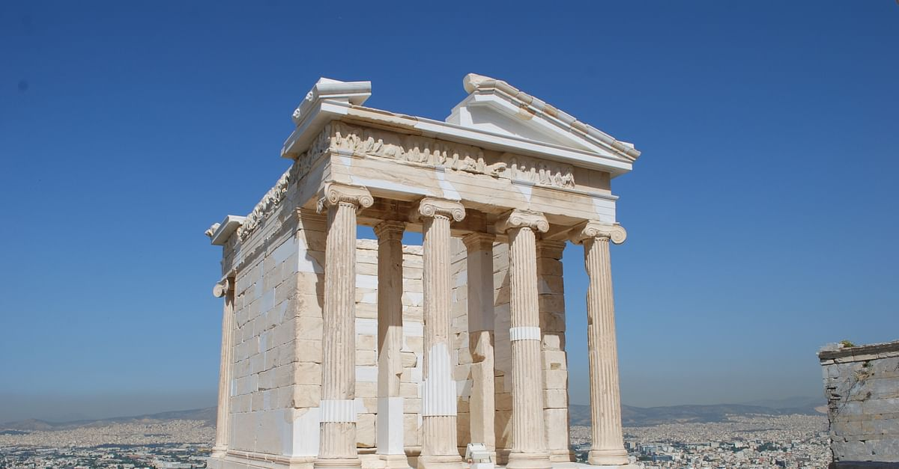
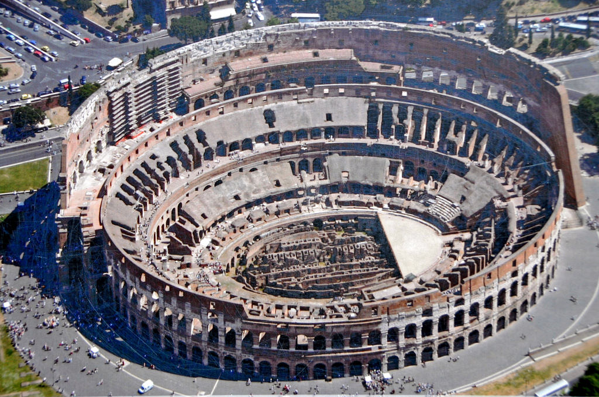

This is the temple of Konshu in Luxor City, Egypt. These are the pyramids of Giza
When Egypt was one of the richest and most powerful civilizations in the
world, the Great Pyramids of Giza where built to honor pharohs who had a
very memorable reign over Egypt. The Pyramids where built to be the tombs
of Khufu, his son Khafre, and his grandson Menkaure. There where also
smaller pyramids built for their moms and wives. Pharoh Khufus son, Pharoh
Khafre, also built the Sphinx.
This is the Athena's Temple

The temple of Athena, designed by the architect Kallikrates, was
built between 426 and 421 BC.The temple had a carved exterior with
different pictures on each side. On the east was shown a gathering of gods
around Zeus, while the other sides presented scenes of war between Greeks
and Persians or Greeks with other Greeks. The south side depicted the
victorious battle of the Greeks against the Persians at Marathon in 490 BC.
This is the Colosseum

The Colosseum was built as part of an effort to revitalize Rome
after the year of the four emperors, 69 CE. As with other
amphitheatres, the emperor Vespasian intended the Colosseum to be an entertainment
venue, hosting gladiator fights, animal hunts, and even mock naval battles.
Here's a reveiw before you start the quiz:
What is it?
Where is it?
When was it built?
Why was it built?
Konshu's Temple
Luxor, Egypt
1186-1155 B.C.
To honor the moon god, Konshu.
Pyramids of Giza
13 kilometers southwest of Cairo
2550 to 2490 B.C.
As tombs for Khufu, Khafre, and Menkaure
Athena's Temple
Athens, Greece
426 and 421 B.C.
To honor the Greek Goddess, Athena
The Colosseum
Rome, Italy
80 A.D.
It was built as part of an effort to revitalize Rome